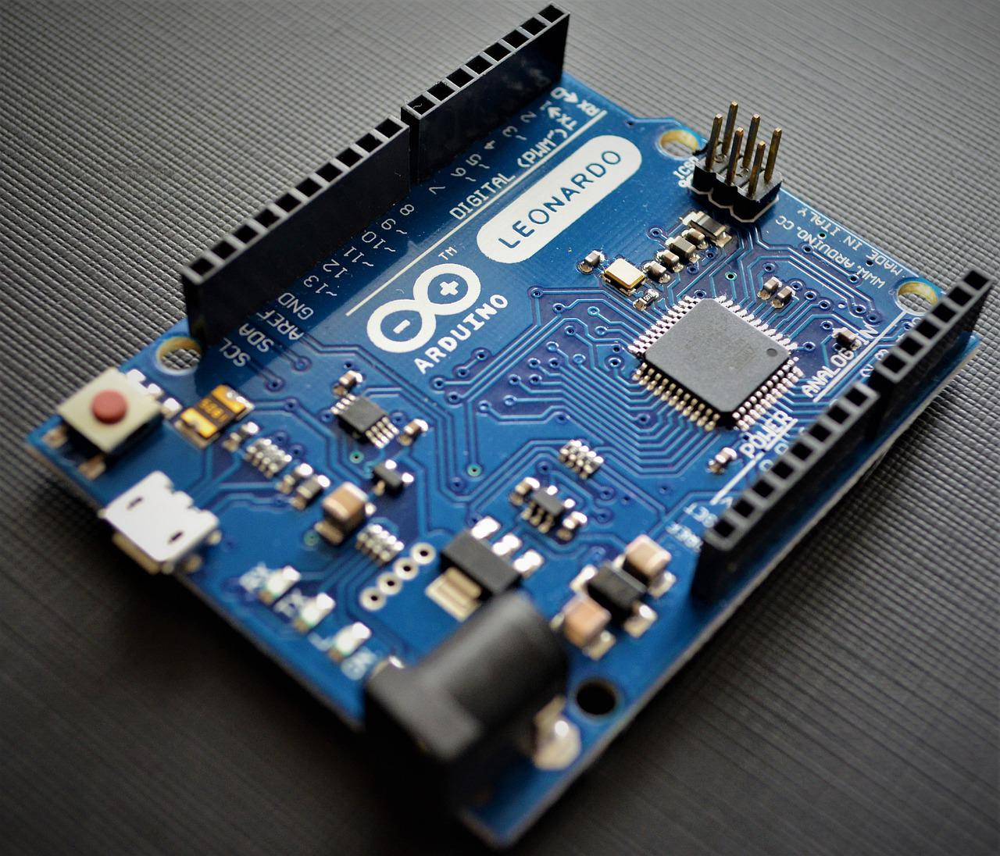

O Arduino é uma plataforma de prototipagem eletrônica de hardware livre e de placa única, projetada com um micro controlador Atmel AVR com suporte de entrada/saída embutido, uma linguagem de programação padrão, a qual tem origem em Wiring, e é essencialmente C/C++. O objetivo do projeto é criar ferramentas que são acessíveis, com baixo custo, flexíveis e fáceis de se usar por principiantes e profissionais. Principalmente para aqueles que não teriam alcance aos controladores mais sofisticados e ferramentas mais complicadas. Pode ser usado para o desenvolvimento de objetos interativos independentes, ou ainda para ser conectado a um computador hospedeiro. Uma típica placa Arduino é composta por um controlador, algumas linhas de E/S digital e analógica, além de uma interface serial ou USB, para interligar-se ao hospedeiro, que é usado para programá-la e interagí-la em tempo real.
O projeto iniciou-se na cidade de Ivrea, Itália, em 2005, com o intuito de interagir em projetos escolares de forma a ter um orçamento menor que outros sistemas de prototipagem disponíveis naquela época. O sucesso foi sinalizado com a obtenção de uma menção honrosa na categoria Comunidades Digitais em 2006, pela Prix Ars Electronic.
A sua placa consiste num micro controlador Atmel AVR de 8 bits, com componentes complementares para facilitar a programação e incorporação noutros circuitos. Um importante aspecto é a maneira padrão como os conectores são expostos, permitindo o CPU ser interligado a outros módulos expansivos, conhecidos como Shields.
O Arduino IDE é uma aplicação multiplataforma escrita em Java derivada dos projetos Processing e Wiring. É esquematizado para introduzir a programação para artistas e para pessoas não familiarizadas com o desenvolvimento de software. Inclui um editor de código com recursos de realce de sintaxe, parênteses correspondentes e indentação automática, sendo capaz de compilar e carregar programas para a placa com um único clique.
Há uma diversidade de modelos para cada necessidade do usuário. Surpreendentemente tem modelo que é do tamanho de um polegar, tem modelo que é circular e tem um modelo que parece um controle de vídeo game. Confira alguns dos modelos aqui embaixo: